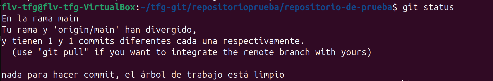
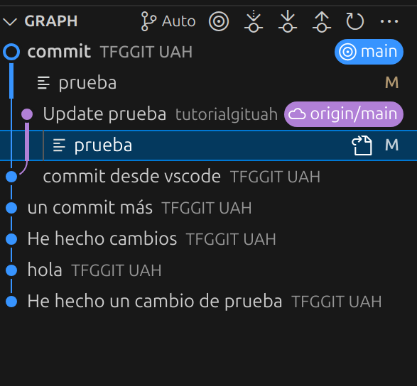

git statusEl comando git status se utiliza para conocer el estado actual del repositorio Git:

Dentro de la carpeta la cual queramos inicializar ejecutamos lo siguiente:
git status
Como podemos ver, hay un "problema", iba a hacer push cuando alguien más ya ha hecho push de ese mismo archivo, gracias al status he podido ver porqué no me dejaba hacer push (más adelante veremos como resolver esto)
En vscode es sencillo, lo tenemos en el control integrado de git, es la parte de abajo donde se nos desglosan los cambios hechos en forma de lista. Si hacemos click podemos ver los archivos modificados y que ha cambiado o que está ocasionando una disparidad entre lo que está en el repositorio y lo que tenemos nosotros en local (como hemos dicho, esto se verá mas adelante, por ahora nos centramos en lo que hace status).